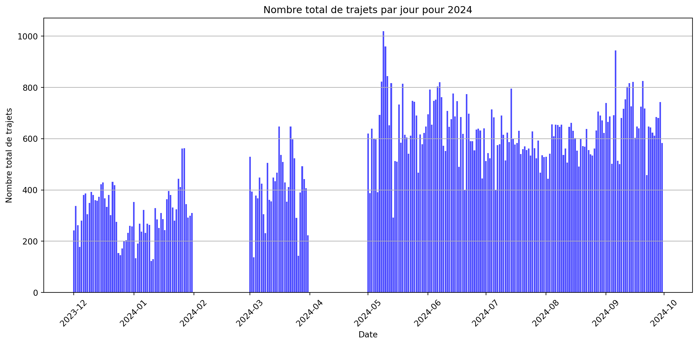
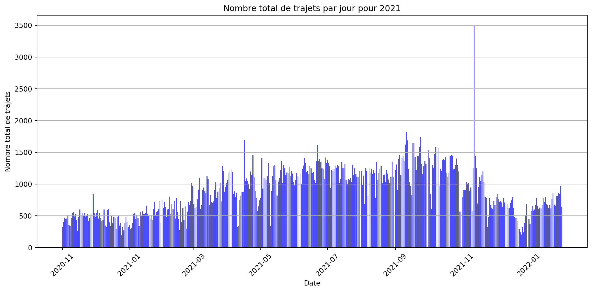
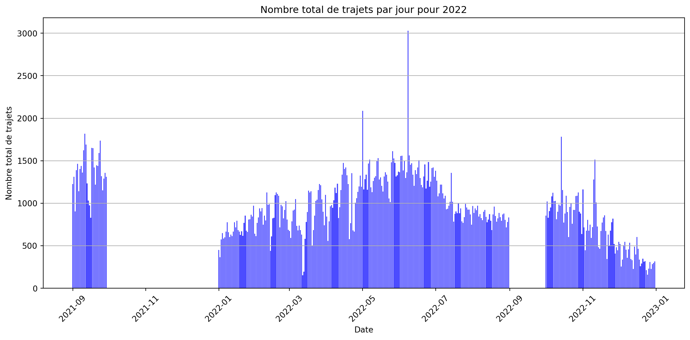
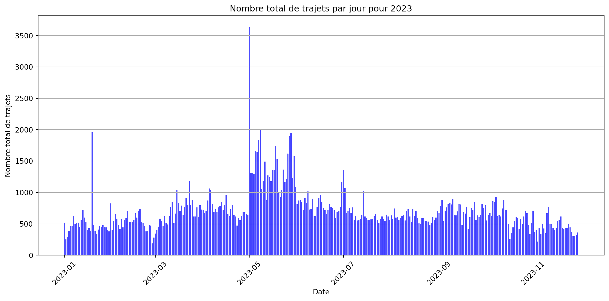

Nombre de trajets par jour:
Date Nombre de trajets
0 2023-12-01 242
1 2023-12-02 338
2 2023-12-03 263
3 2023-12-04 178
4 2023-12-05 281
.. ... ...
241 2024-09-26 612
242 2024-09-27 684
243 2024-09-28 681
244 2024-09-29 743
245 2024-09-30 583
[246 rows x 2 columns]
Index([23, 23, 23, 23, 23, 23, 23, 22, 22, 22,
...
0, 0, 0, 0, 0, 0, 0, 0, 0, 0],
dtype='int32', name='Departure', length=128504)Nombre de trajets par jour:
Date Nombre de trajets
0 2020-11-01 323
1 2020-11-02 404
2 2020-11-03 463
3 2020-11-04 450
4 2020-11-05 458
.. ... ...
447 2022-01-27 813
448 2022-01-28 864
449 2022-01-29 844
450 2022-01-30 973
451 2022-01-31 643
[452 rows x 2 columns]
Index([23, 23, 23, 23, 23, 22, 22, 22, 22, 22,
...
1, 0, 0, 0, 0, 0, 0, 0, 0, 0],
dtype='int32', name='Departure', length=403320)Nombre de trajets par jour:
Date Nombre de trajets
0 2021-09-01 1227
1 2021-09-02 1310
2 2021-09-03 905
3 2021-09-04 1390
4 2021-09-05 1465
.. ... ...
359 2022-12-27 310
360 2022-12-28 226
361 2022-12-29 283
362 2022-12-30 300
363 2022-12-31 317
[364 rows x 2 columns]
Index([23, 23, 23, 23, 23, 23, 23, 23, 23, 22,
...
0, 0, 0, 0, 0, 0, 0, 0, 0, 0],
dtype='int32', name='Departure', length=347157)Nombre de trajets par jour:
Date Nombre de trajets
0 2023-01-01 521
1 2023-01-02 252
2 2023-01-03 295
3 2023-01-04 384
4 2023-01-05 459
.. ... ...
329 2023-11-26 371
330 2023-11-27 304
331 2023-11-28 311
332 2023-11-29 325
333 2023-11-30 361
[334 rows x 2 columns]
Index([23, 23, 23, 23, 23, 23, 23, 23, 23, 23,
...
0, 0, 0, 0, 0, 0, 0, 0, 0, 0],
dtype='int32', name='Departure', length=235544)Nombre de trajets par jour:
Date Nombre de trajets
0 2023-01-01 521
1 2023-01-02 252
2 2023-01-03 295
3 2023-01-04 384
4 2023-01-05 459
.. ... ...
329 2023-11-26 371
330 2023-11-27 304
331 2023-11-28 311
332 2023-11-29 325
333 2023-11-30 361
[334 rows x 2 columns]
Index([23, 23, 23, 23, 23, 23, 23, 23, 23, 23,
...
0, 0, 0, 0, 0, 0, 0, 0, 0, 0],
dtype='int32', name='Departure', length=235544)